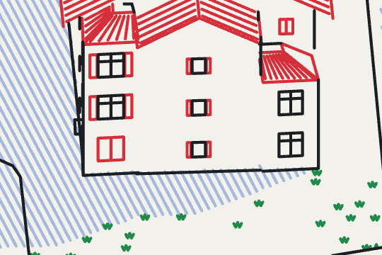
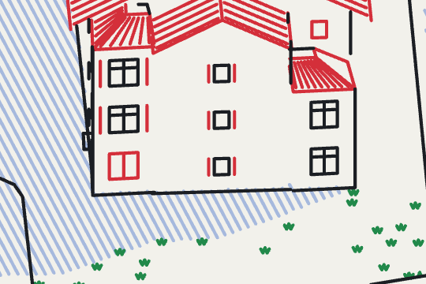
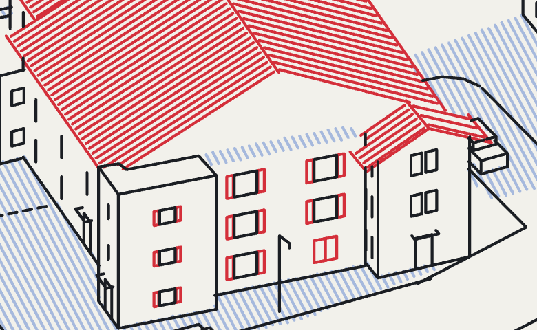
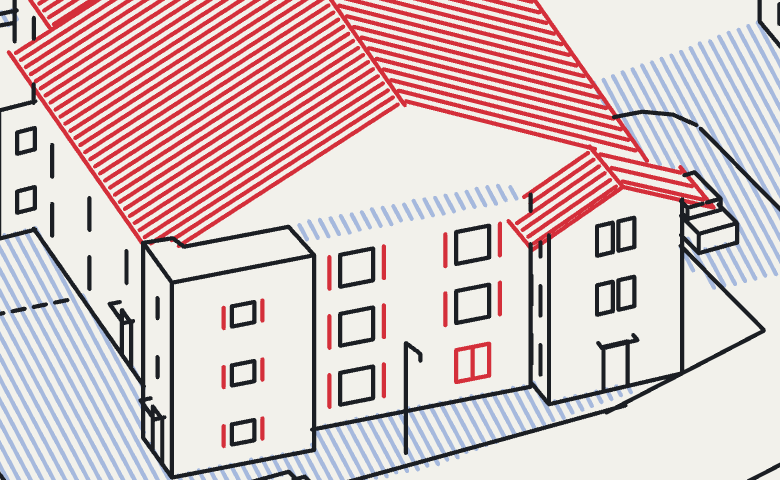

15 November 2026 · Original review · Round 7
Open shutters now leave 1.5 pen widths of horizontal separation from the window frame. Full panels are trimmed towards their existing outer edges, preserving their placement. When a panel becomes too narrow, one coloured upright replaces it; where even that stroke would crowd the frame, the shutter is omitted.
Closed shutters retain their coloured outline. Their centre seam appears only when both halves have enough clear width after allowing for ink. The result keeps the colour accents without doubled strokes touching the black frame.




Three places at two scales, Detail 1 and a 0.35 mm pen, optional OSM tags off. Times are estimates. Changes are modest overall, concentrated on shuttered homes in Mollis and Amsterdam. Both Rye comparisons are unchanged.
| Sheet | Waste before → after | Estimated time change |
|---|---|---|
| Mollis 1:500 | 5.2% → 5.1% | -0.4% |
| Mollis 1:1000 | 6.8% → 6.8% | -1.2% |
| Amsterdam 1:500 | 4.2% → 4.1% | -1.0% |
| Amsterdam 1:1000 | 6.5% → 6.5% | -0.2% |
| Rye 1:500 | 4.9% → 4.9% | +0.0% |
| Rye 1:1000 | 6.6% → 6.6% | +0.0% |
Before lab report · After lab report (local generated files)
Reviewed all five changed golden sheets, six LOD sheets and the enlarged shutter comparisons above. Changes are confined to window linework and its plot/SVG summaries. Classification and other feature strokes remain unchanged. The legacy “houses” statistic can also change because it counts red-pen strokes, including shutters, rather than roof classification; no roofs were removed.
Regression tests cover full panels, single strokes and omission with regular and broad pens, minimum frame clearance, and closed shutters losing their centre seam. The full suite checks panning, determinism, setting gates and valid linework. No physical proofs were inspected, nor every seed, view or all 29 presets. The large full-panel branch is checked geometrically by tests; the illustrated real-place comparisons focus on its simpler print-size forms. Path crossings and wider composition remain for later work.